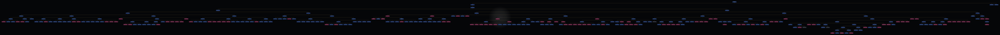

Το αρχικό σχεδιάστηκε από τον Γιώργο Κ. Κωνσταντόπουλο το Σεπτέμβρη του 1978.
Home
Family History
Full Family Tree
Use scroll bars, mouse drag/pan, or zoom controls to view the full image.
−
100%
+
